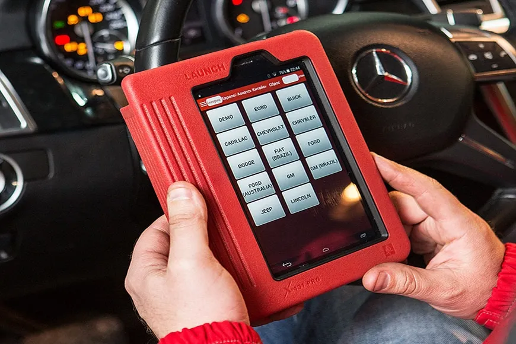
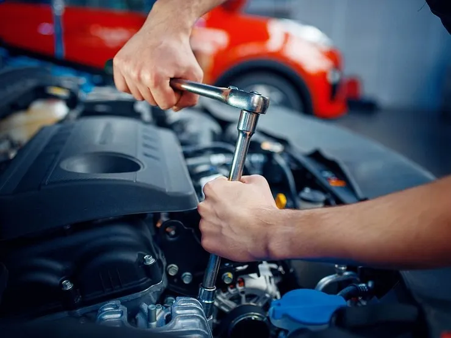
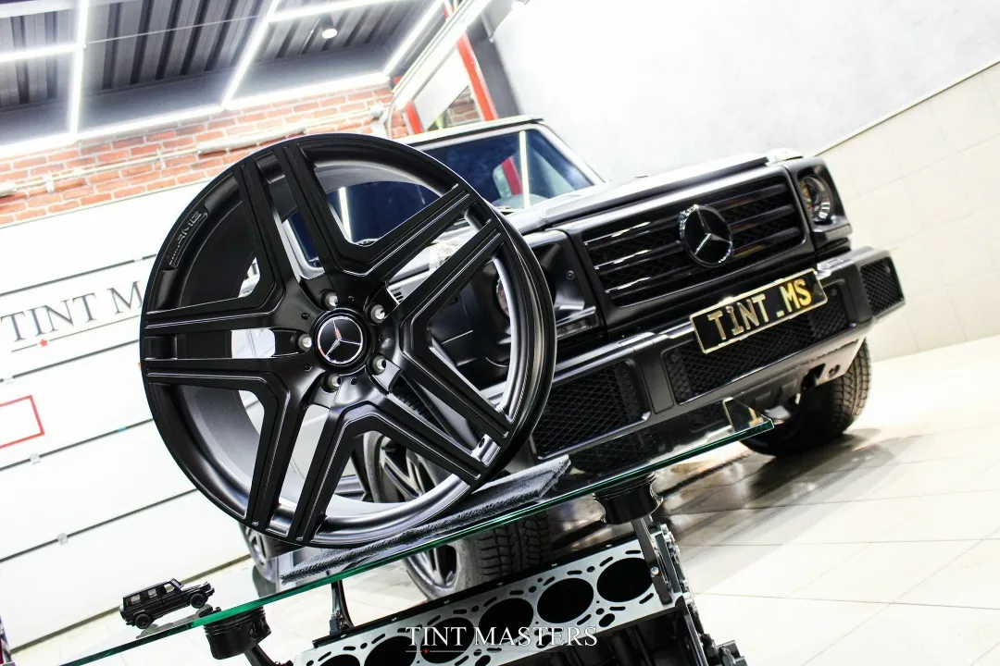
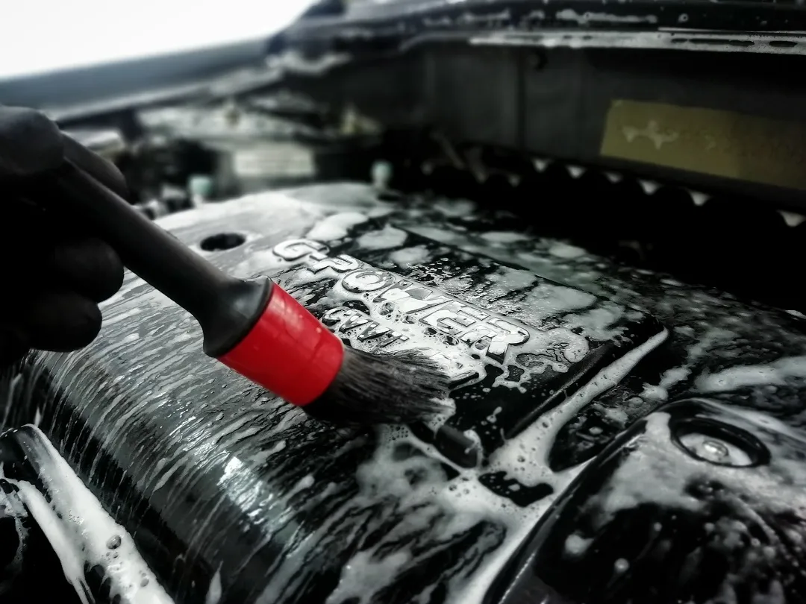

Мы знаем, как важно, чтобы ваш автомобиль выглядел идеально
Быстрое и точное выявление неисправностей вашего автомобиля

Диагностика с использованием оборудования Launch позволяет быстро и точно выявить ошибки и неисправности вашего автомобиля.
Узнайте состояние вашего автомобиля уже сегодня! Своевременная диагностика помогает предотвратить серьезные поломки и сэкономить на ремонте.
Забота о вашем автомобиле в деталях!

Проведение технического обслуживания в детейлинг-студии — это уникальное сочетание стандартных регламентных работ с повышенным вниманием к каждому элементу вашего автомобиля.
Помимо стандартного ТО (замена масел, фильтров, диагностика), мы заботимся о чистоте и внешнем виде авто. Каждый автомобиль проходит качественную техническую мойку.
Детейлинг-студии уделяют внимание мельчайшим деталям. Все работы выполняются аккуратно, с использованием профессионального оборудования и материалов премиум-класса.
В отличие от обычных автосервисов, в детейлинг-студии поддерживаются стерильные условия, исключающие загрязнение салона или кузова во время работ.
Мы внимательно относимся к запросам клиентов и учитываем особенности вашего автомобиля. Наши мастера подбирают лучшие решения для конкретной модели и условий эксплуатации.
Пока специалисты занимаются техническим обслуживанием, можно выполнить дополнительные процедуры ухода за автомобилем, не тратя время на посещение нескольких сервисов.
Запишитесь на техническое обслуживание в нашей детейлинг-студии и ощутите разницу!
Профессиональный уход за колесами для вашей безопасности

В нашей детейлинг-студии мы предлагаем профессиональные услуги шиномонтажа и правки дисков. Мы используем современное оборудование и качественные расходные материалы, чтобы гарантировать безопасность и комфорт вашей езды.
Мы заботимся о вашем автомобиле так же, как вы!
Чистота и эффективность работы двигателя

Ваш двигатель и радиатор – сердце автомобиля, и их чистота напрямую влияет на производительность и срок службы. Мы предлагаем профессиональную мойку подкапотного пространства и радиаторов, чтобы ваш автомобиль работал исправно и выглядел как новый.
Регулярное очищение моторного отсека важно не только для эстетики, но и для функциональности.
Деликатная очистка моторного отсека с использованием профессиональных средств, безопасных для электроники. Тщательная сушка и обработка ключевых узлов защитными составами.
Удаляем насекомых, грязь и пыль с поверхности радиатора. Промываем соты радиатора под нужным давлением, чтобы не повредить их. Проверяем состояние радиатора на предмет утечек или повреждений.
Ваш автомобиль не только работает лучше, но и выглядит идеально под капотом! Запишитесь на мойку подкапотного пространства и радиаторов уже сегодня, чтобы продлить жизнь вашему автомобилю.
Запишитесь удобным способом — ответим быстро и подскажем лучший вариант.
Оставьте заявку — мы уточним детали, подберём решение и назовём стоимость. Обычно отвечаем быстро в рабочее время.